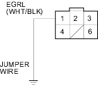
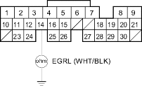
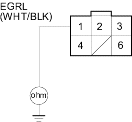
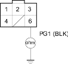
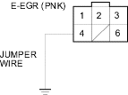

- Turn the ignition switch OFF.
- Disconnect ECM/PCM connector A (31P).
- Connect the EGR valve 6P connector terminal No. 1 and body ground with a jumper wire.

- Check for continuity between ECM/PCM connector terminals A13 and body ground.

Is there continuity?
YES |
- Go to step 17. |
NO |
- Repair open in the wire between the EGR valve and the ECM/PCM (A13). |

- Check for continuity between the EGR valve 6P connector terminal No. 1 and body ground.

YES |
- Repair short in the wire between the EGR valve and the ECM/PCM (A13). |
NO |
- Go to step 18. |
- Check for continuity between the EGR valve 6P connector terminal No. 6 and body ground.

Is there continuity?
YES |
- Go to step 19. |
NO |
- Repair open in the wire between the EGR valve and the G101. |
- Disconnect ECM/PCM connector B (24P).
- Connect EGR valve 6P connector terminal No. 4 and body ground with a jumper wire.
